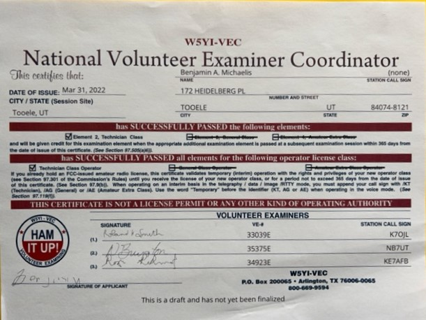
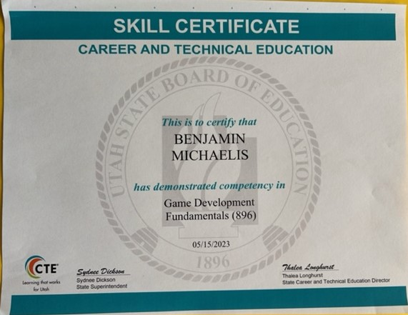
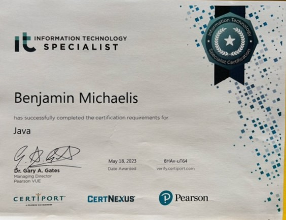
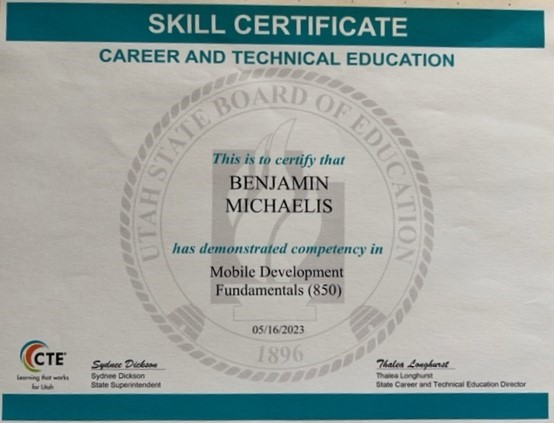

Accomplishments
I'm Ben Michaelis. Actually my name is Benjamin Michaelis but I only go by Ben. I've done stuff. I don't really think much about my accomplishments, but I guess I've done a few cool things over the years. Of my accomplishments, pretty much all of them I had no help, so unless I say otherwise, you can assume that I alone am awesome.
I wrote a program that shows a board of chess pieces in ascii, on which the pieces can be moved between spaces and captured.
I wrote and rewrote the Tic-Tac-Toe game with turns, and win detection, on several different devices, one of which I made on a casio calculator, which I had to figure out how to code on my own, because there arn't any half decent programming tutorials for the thing.
I've made a mostly functional computer in a particle simulation game, complete with a stack, a 10 by 5 character display, instruction counter, clock, registers, computer manual, and instruction set. Not a guide was followed, not a single part borrowed, so that I could understand absolutely every part of it.
I'm a certified Amateure Radio Technician and I lead an army of dinosaures to war against a fortress full of weeping angels one time in a dream.

I graduated highschool with a bunch of computer pathways completed, inluding game dev, java, and mobile app development, and I'm now in my first year of college.



I learned all I could working in a fast paced, customer focused, mentally demanding job. I worked at a Dell Taco near home. I primarily focused on what I could do to improve the customer experience, and I greatly improved my social skills and confidence as a result.
My cat died, I consume social media, I have few friends, I have way too much confidence in my balance sometimes, and yet somehow I'm still alive. I blame my mom. She's too cool.
I can make my own food! *Gasp* Food? Yeah Food! Like what? Rice, oatmeal, noodles, sandwiches, and even tacos! Whoa that's like... so awesome.
I can't think of anything else, so there is nothing to write here except goodbye. D: